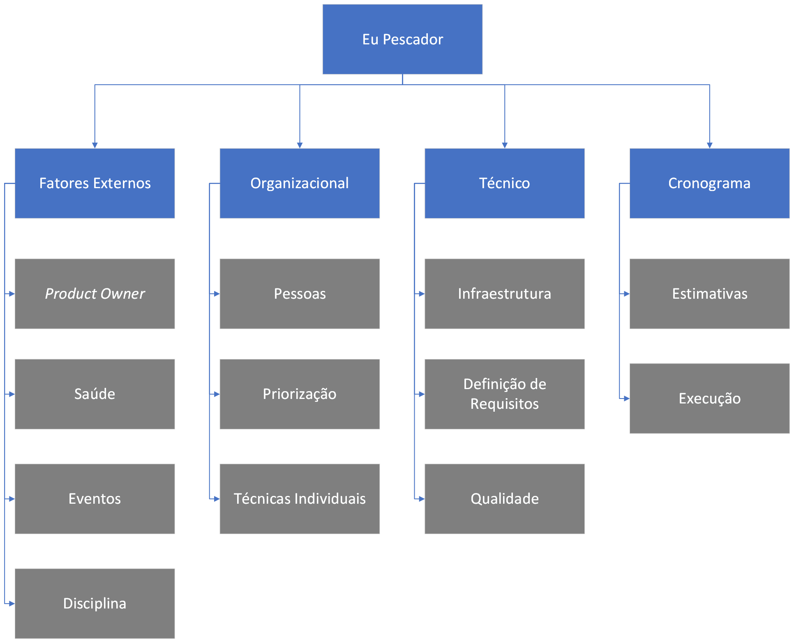

Gerenciamento de Riscos
Objetivo
O gerenciamento dos riscos é um documento que busca documentar os processos de condução do planejamento, da identificação, da análise, do planejamento das respostas dos riscos em um projeto. Esse gerenciamento tem como objetivo aumentar a probabilidade de ocorrer algum impacto positivos e diminuir a probabilidade de impactos negativos, otimizando assim as chances de sucesso do projeto.
Estrutura Analítica de Riscos (EAR)

Link para o diagrama
Categoria dos Riscos
Fatores Externos
- PO: Riscos que envolvem problemas relacionados ao Product Owner do projeto, tais como: indisponibilidade, atraso em respostas e etc;
- Saúde: Riscos associados à saúde dos componentes da equipe de desenvolvimento;
- Eventos: Riscos referentes à eventos que podem atrasar o cronograma, como: Copa do Mundo, Natal e ano novo;
- Disciplina: Riscos referentes à problemas que possam existir dentro da discplina.
Organizacional
- Pessoas: Riscos associados à má gestão de recursos humanos;
- Priorização: Riscos que envolvem uma priorização incoerente dos requisitos do projeto;
- Técnicas Individuais: Riscos associados à falta de conhecimentos necessários para a realização de uma atividade.
Técnico
- Infraestrutura: Riscos relacionados à mudança de preços nos serviços PaaS;
- Definição de Requisitos: Riscos associado a uma concepção de projeto diferente da visão do Product Owner;
- Qualidade: Riscos relacionado à resolução de uma issue com uma qualidade diferente da esperada.
Cronograma
- Estimativas: Riscos associado à uma estimativa errônea para uma issue;
- Execução: Riscos referentes à execução do projeto.
Análise Quantitativa dos Riscos
Probabildades dos Riscos
| Possibilidade |
Probabilidade |
| Muito alta |
>50% |
| Alta |
26-50% |
| Média |
16-25% |
| Baixa |
6-15% |
| Muito baixa |
<5% |
Impactos dos Riscos
| Impacto |
Custo |
Descrição |
| Muito alto |
O semestre |
Um impacto que inviabiliza o projeto |
| Alto |
3+ sprints |
Um impacto que atrasa o projeto como um todo |
| Médio |
1-2 sprints |
Um impacto que afeta mais de uma iteração do projeto |
| Baixo |
2-7 dias |
Um impacto que pode afetar uma iteração do projeto |
| Muito baixo |
< 1 dia |
Um impacto que tem pouquissíma importância no projeto |
Matriz de probabilidade e impacto - Prioridade
Link para a planilha
Riscos Levantados
Fatores Externos
| ID |
Risco |
Impacto |
Probabilidade |
Prevenção |
Resposta |
| R01 |
Integrantes abandonarem disciplina |
Médio |
Muito Alta |
- |
Seguir com os planejamentos levando em conta a diminuição dos integrantes |
| R02 |
Atrasos por conta dos eventos sociais |
Baixo |
Muito Alta |
Adiantar as necessidades. |
Aumentar a velocidade do andamento do projeto. |
| R03 |
Atraso dos StakeHolders |
Médio |
Média |
Sempre deixar claro as resposabilidades dos stakeholders |
Sempre cobrar os envolvidos no projeto. |
| R04 |
Mudanças nos serviços do Heroku |
Médio |
Muito Alta |
Planejar outras maneiras de configurar o deploy |
Configurar o deploy |
| R04 |
Novos integrantes |
Médio |
Muito baixa |
- |
Começar a planejar as próximas atividades levando em conta o aumento no número de integrantes |
Organizacional
| ID |
Risco |
Impacto |
Probabilidade |
Prevenção |
Resposta |
| R05 |
Issue incoerente com as habilidades do desenvolvedor |
Média |
Muito Alta |
Sempre garantir que o contribuidor está confortável com o que assimilidado para ele. |
Alterar a issue para outra pessoa. |
| R06 |
Priorizar errado os requisitos |
Alto |
Média |
Sempre se atentar no fluxo de desenvolvimento que está sendo montado |
Repriorizar os requisitos. |
| R07 |
Pareamento desbalanceado |
Baixo |
Média |
- |
Refazer o pareamento da sprint. |
Técnico
| ID |
Risco |
Impacto |
Probabilidade |
Prevenção |
Resposta |
| R08 |
Solução proposta não agradar o PO |
Alto |
Baixa |
Definir o que se espera antecipadamente |
Refazer a solução |
| R09 |
Requisitos definidos não resolvem o problema |
Alto |
Baixa |
Sempre incluir o PO e garantir que todos os aspectos essenciais da aplicação estão sendo supridos |
Redefinição dos requisitos |
| R10 |
Não priorizar um aspecto importante do projeto |
Alto |
Baixa |
Sempre incluir o PO em toda reunião e garantir que a sua visão de produto está sendo cumprida |
Refazer a solução |
Cronograma
| ID |
Risco |
Impacto |
Probabilidade |
Prevenção |
Resposta |
| R11 |
Estimar de maneira errada atividades do projeto |
Alto |
Médio |
- |
Alocar mais membros para tentar finalizar a tarefa no tempo definido |
| R12 |
Executar a tarefa de forma que o problema não seja solucionado |
Médio |
Baixo |
Definir detalhadamente os critérios de aceitação |
Alinhar o objetivo da tarefa com os envolvidos |
Referências
PMI. Um guia do conhecimento em gerenciamento de projetos. Guia PMBOK 5a. ed. - EUA: Project Management Institute, 2013.
Versionamento
| Data |
Versão |
Descrição |
Autor |
| 27/11/2022 |
1.0 |
Criação do documento |
Thiago e Washington |